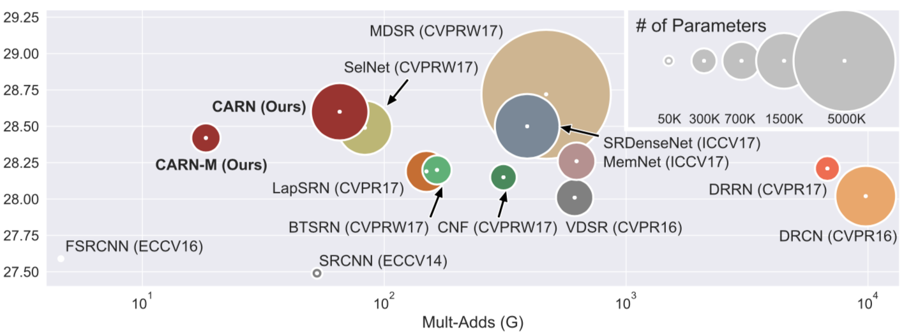
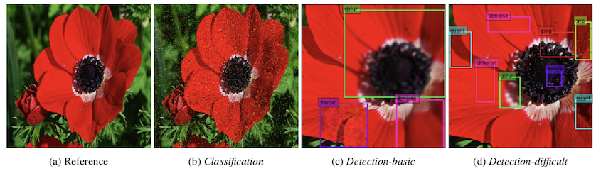

I am a PhD student at School of Computer Engineering, Ajou University (Suwon, Korea).
My research interests are image distortion restoration (e.g. super-resolution) and human-AI interaction system.
[Github] [Linkedin] [Resume] [Google Scholar]
email: nmhkahn at gmail dot com
My research interests are image distortion restoration (e.g. super-resolution) and human-AI interaction system.
[Github] [Linkedin] [Resume] [Google Scholar]
email: nmhkahn at gmail dot com
Publications
|  |
Fast, Accurate, and Lightweight Super-Resolution with Cascading Residual Network Namhyuk Ahn, Byungkon Kang, Kyung-Ah Sohn ECCV 2018. (accpeted) [arXiv] [Bibtex] [GitHub] |
|
Image Super-resolution via Progressive Cascading Residual Network Namhyuk Ahn, Byungkon Kang, Kyung-Ah Sohn In Proceedings of CVPR Workshops, 2018. [Paper] [Bibtex] [GitHub] |
|
|  |
Image Distortion Detection using Convolutional Neural Network Namhyuk Ahn, Byungkon Kang, Kyung-Ah Sohn In Proceedings of ACPR, 2017. [Paper] [Bibtex] |
Awards
Honorable Mention Award, NTIRE 2018 Challenge (June 2018)- Single image super-resolution challenge (Track 1: Classic Bicubic) on New Trends in Image Restoration and Enhancement (NTIRE) workshop in conjunction with CVPR 2018.
Teaching Experience
Lecture Instructor, Fastcampus (Aug 2017 - Aug 2017)- Taught deep learning and TensorFlow on Fastcampus Data Science School as an instructor.
- Slides and codes are available on here (korean).